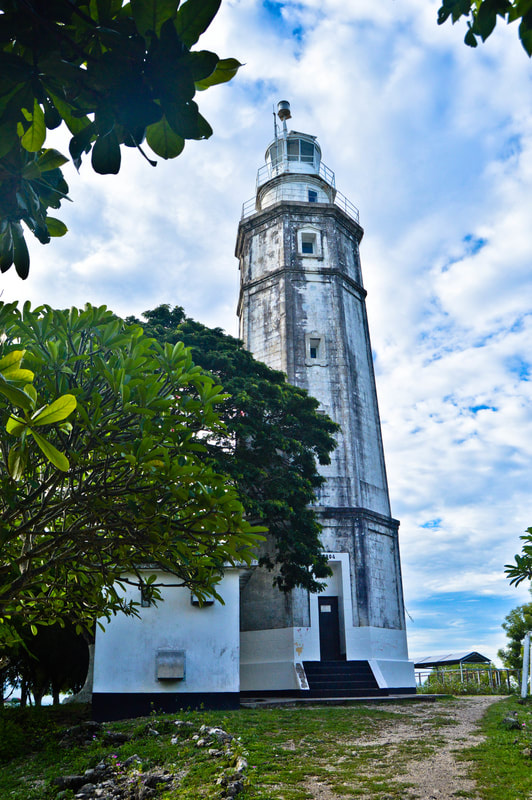
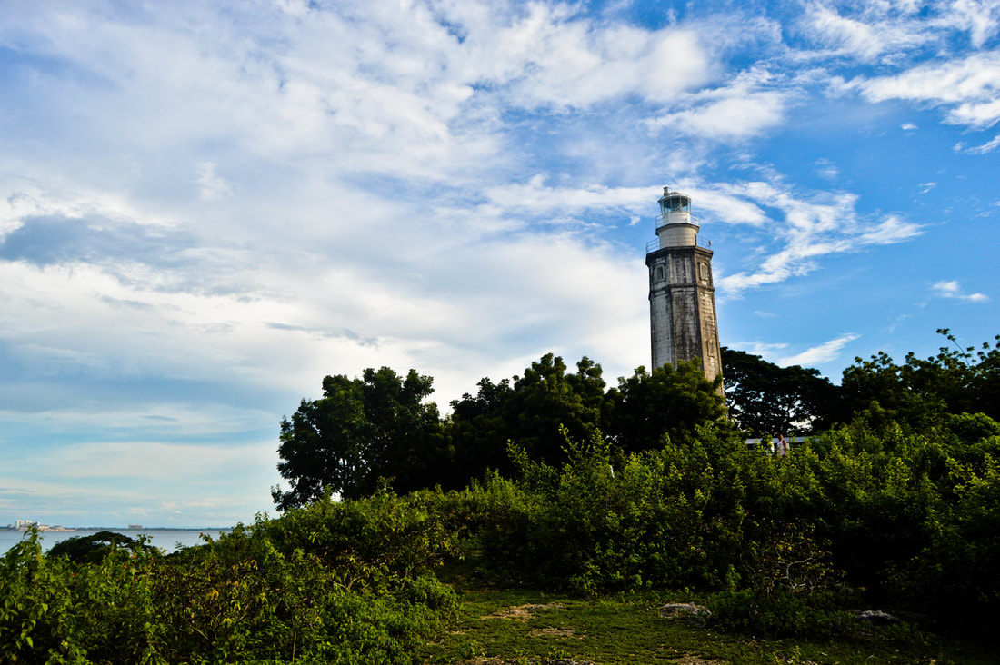
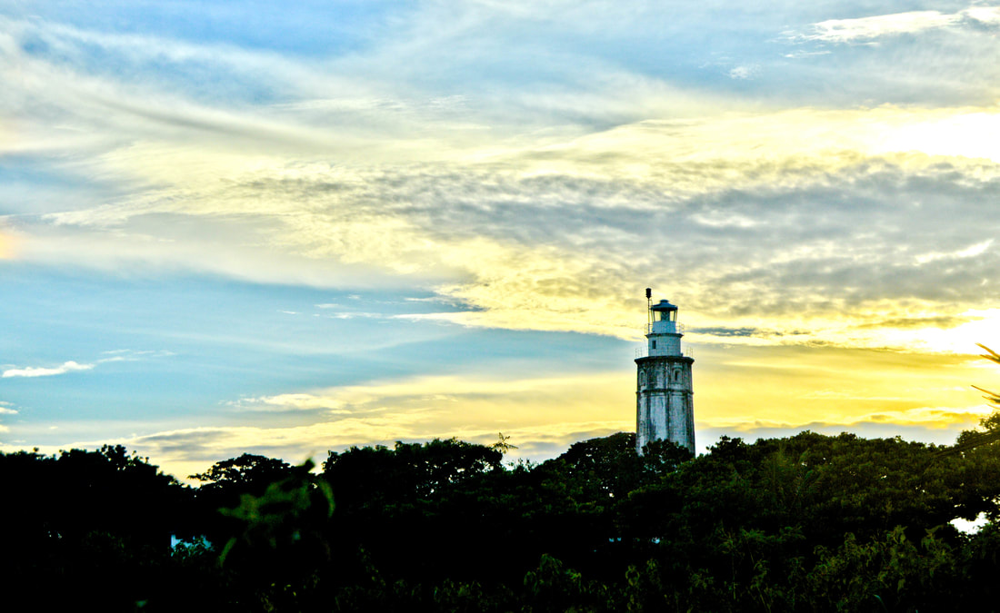
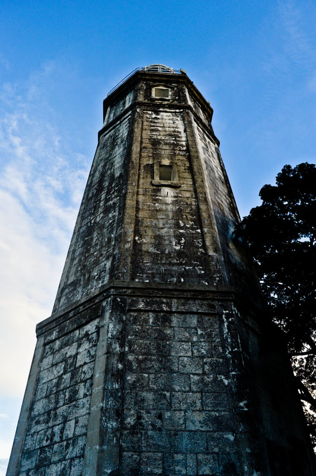
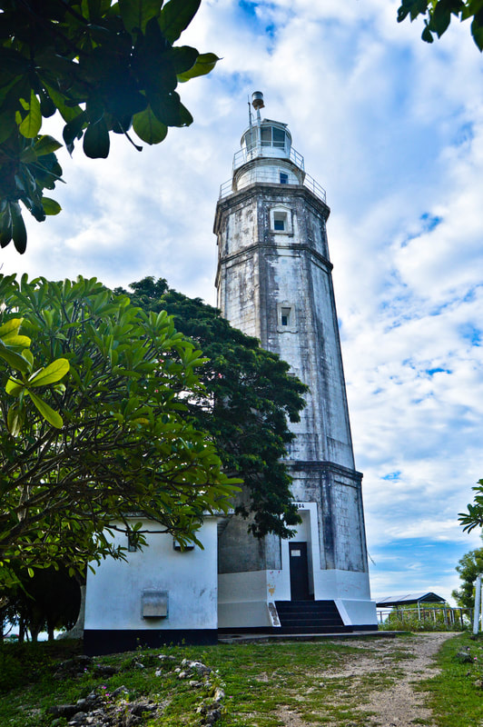
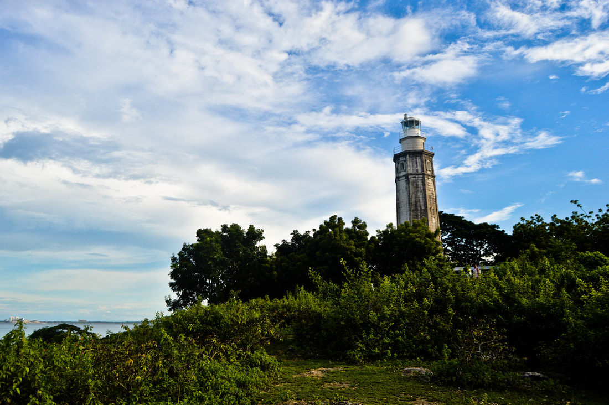
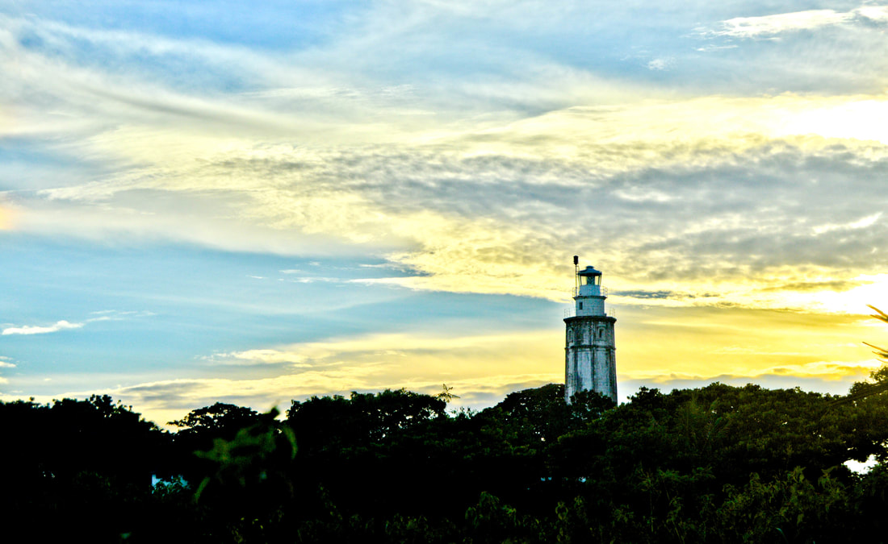
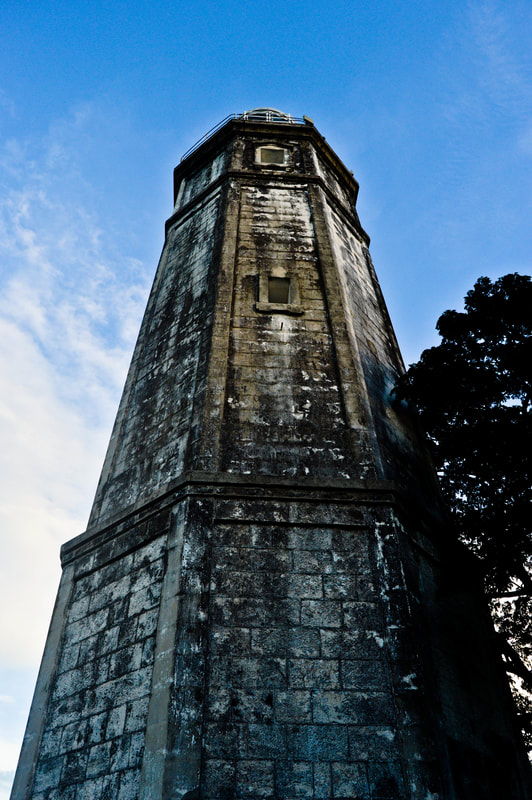

ABOUT THE PLACE
The Bagacay Point Lighthouse, commonly known as the Parola, is an iconic historical landmark located in Liloan, Cebu. Built in 1904 during the American colonial period, this lighthouse stands on a hill overlooking the sea, serving as a navigational aid for sailors passing through the area. The structure, made of sturdy white-painted steel and concrete, has become a symbol of Liloan. Its picturesque location offers breathtaking views of the coastline and surrounding landscape, making it a favorite spot for photography and relaxation. The lighthouse is also surrounded by lush greenery, adding to its charm and appeal to visitors.